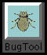
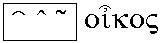

Simbolo de
la aro de ĉiuj kompleksaj nombroj (ℂ).
Simbolo de
la aro de ĉiuj kompleksaj nombroj (ℂ).
(2) C (prononcu co) —
Ĝeneralcela programlingvo apartenanta al la posteularo de ALGOL-60, unue ellaborita de Dennis Ritchie [ˈrɪʧɪ] ĉe Bell-Laboratorioj en 1972 kiel sistemprogramada lingvo por Unikso. Nuntempe C estas unu el la plej disvastigitaj sistemprogramadaj lingvoj.
Respondaro pri C troveblas ĉe http://www.cis.ohio-state.edu/hypertext/faq/bngusenet/comp/lang/c/top.html. Vd ankaŭ http://www.lysator.liu.se/c/.
Projekto de ISO-normo pri C++ troveblas ĉe http://www.maths.warwick.ac.uk/c++/pub/.

1996-02-29
Naturisma nomo por zoeto.
1996-11-03
Vd ĉe ĵeto.
Angle: target set, codomain
France: ensemble d'arrivée
Germane: Wertbereich, Zielmenge
Ruse: область
значений функции
1996-02-29
Vd ĉe paso.
Angle: output file, target file
Ruse: выходной файл
1996-02-29
Speco de maŝinlingvo por prezenti rezulton de programtraduko; tiu rezulta formo de la tradukita program(modul)o.
Angle: object code
Ruse: объектный код
1996-02-29
La komputilo por kiu estas destinita produktata programaro; speciale, komputilo sur kiu ruliĝos tradukata programo (vd ilkomputilo, gasttradukilo).
Angle: target
machine
Ruse: выходная машина, целевая
машина, объектная машина
1996-02-29
La lingvo en kiun traduko estas farata. Kp fontlingvo.
Angle: target language,
object language
Ruse: выходной язык
1996-02-29
∏ Programmodulo post la prilaboro per tradukilo (interalie per asemblilo), taŭga por plua traktado per bindilo, ŝargilo aŭ por registrado en celmodula biblioteko.
Noto. La konfuzo inter «cel» kaj «objekt» venas el la angla.
Angle: object
module
Ruse: объектный модуль
1996-02-29
∏ Celmodulo.
Angle: target program, object program
Germane: Zielprogramm
Ruse: выходная
программа
1996-02-29
 Aranĝi la
eligata(j)n linio(j)n centre inter la
maldekstra kaj la dekstra marĝenoj, ekz-e
Aranĝi la
eligata(j)n linio(j)n centre inter la
maldekstra kaj la dekstra marĝenoj, ekz-e
ĉi tiel.
Oni ofte centrigas la ĉapitrotitolojn, aŭtorindikojn, matematikajn formulojn ktp. Normala teksta redaktilo devas disponigi specialajn komandojn por centrigo.
Noto. PIV1 difinas centri kiel verbon transitivan (kun ekzemploj Zamenhofaj); PV donas por tiu senco kaj centri, kaj centrigi, ambaŭ kun Z. Ni preferas la formon centrigi, ĉar tio estas pli kohera kun la aliaj tekstoprilaboraj operacioj: dekstremigo, suprigo, kursivigo, marĝenigo — kaj centrigo. Tiu formo estas tutcerte ĝusta gramatike:
centro → centra → centrigi.
Ke Zamenhof uzis centri kun la senco transitiva estas bedaŭrinda fakto, kiu faras la verbon centrigi dusenca, depende je tio, ĉu oni derivas ĝin el adjektivo (kiel mi preferas), aŭ el la transitiva centri. Plej bone estus preferi la statan sencon de «centri», kiu ankaŭ estas ĝusta laŭ la eladjektiva derivo:
centri = esti centra:
ĉiuj titoloj perfekte centras.
Angle: to center,
centering
Ruse: центрировать
1996-08-24
 Normo por plenumigi eksterajn programojn sur servilo de TTT. La
eksteraj programoj estas nomataj «kluzoj», ĉar
ili funkcias kiel interfaco inter ekstera
datumfonto kaj la servilo.
Normo por plenumigi eksterajn programojn sur servilo de TTT. La
eksteraj programoj estas nomataj «kluzoj», ĉar
ili funkcias kiel interfaco inter ekstera
datumfonto kaj la servilo.
Simpla HTML-teksto, bildigata de onia retumilo estas statika objekto, ĝi ekzistas en fiksita stato — teksta dosiero, kiu ne ŝanĝiĝas. Kontraste al tio, CGI-programo estas plenumata realtempe, tial ĝi povas liveri «dinamikan» informon.
Ekz-e, oni povus disponigi grandan datumbazon al la mondo tra la TTT. Por tio oni kreas CGI-programon, kiun la TTT-demono plenumados por transmeti la datumojn al la datumbaza serĉilo, por ricevi la rezultojn kaj por bildigi ilin al la kliento. Tio estas tipa ekzemplo de la «kluzo», el kiu fakte estiĝis la tuta CGI.
Aliflanke oni atentu, ke per CGI oni fakte disponigas al la tuta mondo la eblon ruli programon per onia komputa sistemo, kio necesigas specialan datumprotekton.
Vd CGI Specification; ankaŭ ĉe NCSA kaj Stars.
Kp servleto.
1996-02-29
Angle: cybernetics
Ruse: кибернетика
1996-02-29
« Prestipo, kies grando estas 12-punkta, kaj
servas kiel unuo de tipografia mezuro por la pli grandaj tipoj: kvarcicera
tipo» [PIV1].
Vd tipara grado.
Rim. La nomo «cicero» precipe taŭgas por la mezurunuo uzata en la kontinenta Eŭropo (4.5108 mm); la Anglalingvuja pigo (angle pica) havas similan rolon, sed estas iomete malpli granda. Vd punkto.
Angle: cicero; pica
France: cicéro
Germane: (grobe) Cicero
Ruse: цицеро
1996-02-29
1996-02-29
Rilata al, operacianta per cifereca prezento (kontraste al la analoga).
Rim. Vd ankaŭ bit-.
Noto. Iuj [RTA84] preferas havi
specialan terminon diĝita:
Dum la adjektivo cifereca rilatas al informoj prezentataj per ciferoj (ekz-e, indikatoro), diĝita estas pli ĝenerala nocio. Ekz-e, en ordinara komputilo aŭ neanaloga cirkvito la informo fluas ne en cifera, sed en diĝita formo. La ciferoj aperas nur en la finŝtupo.Tiu obĵeto ne estas senriproĉa. La sufikso -ec estas enŝovita ĝuste por fari la aludatan distingon (ne tre gravan, ja la angla kaj la rusa ĝin malatentas; sed la sufikso nepre bezonatas en ciferecigi): cifereca estas io esence ekvivalenta al ciferoj, sed ne nepre cifera. Se la koncerna indikatoro montrus la rezulton analoge, per nadlo, ĉu ĝi estus nadla aŭ nadleca? Iuj uzas diĝita adjektive kaj
Nedezirinda sekvo de la adopto de diĝita estus, ke
per retroderivado oni povus erare pensi, ke «cifero» en Esperanto estas
«diĝito».
Angle: digital, numeric(al)
Pole: cyfrowy
Ruse: цифровой
1996-10-09
Komputilo kiu traktas datumojn en cifereca prezento.
Angle: digital computer
Ruse:
цифровая ВМ
1996-02-29
Prezento per finia signaro, t.e. indikado de unu el finia nombro da alternativoj per signo aŭ grupo de signoj (matematike tio ekvivalentas al ciferoj, vd kodo).
Angle: digital representation
Ruse: цифровое представление
1996-02-29
Teĥnologio koncernanta la aplikon de komputiloj por stirado de industriaj procezoj, ekz-e por stiri diversajn ilmaŝinojn. La stirado estas farata konforme al ciferecaj datumoj (ekz-e prezentantaj la koordinatojn de la ilmaŝinaj organoj). La datumoj estas traktataj per komputilo kaj registrataj sur konvena datumportilo, uzota de la ilmaŝino. Kp komputilizita fabrikado.
Angle: numerical control
Germane: numerische Steuerung
France: commande digitale
Ruse: ЧПУ,
числовое программное управление
1996-02-29
Aparato aŭ programo por konverto de analogaj datumoj (ekz-e grafikaj, vd skanilo) en diskretajn (ciferecajn); kp rastrumigilo, diskretigo.
Angle: A/D converter,
analog-to-digital converter, digitizer, quantitizer
France: numériseur
Ruse:
аналого-цифровой преобразователь, АЦП
1996-10-21
«Skribsigno de nombroj: arabaj (1, 2, 3 ktp), romanaj (I, II, V, X ktp)» [PIV1].
Por la nombroj en la deksesuma nombrosistemo (tre grava en komputado), krom la dek Eŭropaj ciferoj estas uzataj la literoj A, B, C, D, E, F.
Rim. La termino araba cifero estas konfuziva. Pri la anoj de la sekvenco 1, 2, 3… oni prefere diru Eŭropa cifero. Vd numeralo, nomo, signo, bito, Rom(an)a, cifereca, majuskla cifero, minuskla cifero.
Ankaŭ la PIV-aj nomo kaj ekzemplo pri la Rom(an)aj ciferoj estas kritikindaj.
Angle: digit
France: chiffre
Hispane: cifra
Germane: Ziffer
Itale: cifra
Ruse: цифра
1996-02-29
Ligillisto kies lasta ano referencas la unuan.
Angle: circular list
Ruse: кольцевой
список
1996-02-29
Vd ŝovo.
Angle: circular shift, cyclic shift, end-around shift
France: décalage circulaire [cyclique]
Germane: Umlaufverschiebung, Ringschieben
Ruse:
циклический сдвиг
1996-02-29
Simpla ciklo estas ciklo en kiu ĉiuj verticaperoj, krom la komenca kaj la fina, estas malegalaj. En direkta grafeo oni povas konsideri senorientajn ciklojn (por kiuj la eĝdirekto ne estas atentata), kaj orientitajn ciklojn (en kiuj ĉiu eĝo estas trapasata laŭ ĝia direkto).
Angle: cycle
Ruse: цикл
1996-02-29
 Ĵargona vorto por eraro, programa fuŝo (neevitebla tradukprunto el la angla).
Angle: bug
Ruse: дырка, жук, лажа
1996-02-29
 Ĉapelo: «Supersigno, kun formo de akuta kaj
malakuta angulo, kiun oni uzas por ŝanĝi la sonon de kelkaj vokaloj aŭ
konsonantoj» [PIV1].
Ĉapelo: «Supersigno, kun formo de akuta kaj
malakuta angulo, kiun oni uzas por ŝanĝi la sonon de kelkaj vokaloj aŭ
konsonantoj» [PIV1].  Fakte tiu difino estas francaĵo: en la greka oni uzas ankaŭ aliajn signojn por indiki la cirkumfleksan akcenton.
Angle: circumflex
Germane: Zirkumflex, steigend-fallender Akzent
Ruse:
циркумфлекс, облегчённое ударение
1996-04-07
En mikrokomputilo, ŝanĝebla panelo sur kiu estas muntita cirkvitaro kun la bornoj necesaj por konektado en ĉasia kartingo.
Angle: circuit board, circuit card
France: carte, plaque
Germane: Karte, Leiterplatte
Ruse: монтажная
плата
1996-02-29
«La vojo, laŭ kiu kurento povas cirkuli: fermita, malfermita cirkvito; interna, ekstera, cirkvito, paralelaj, seriaj cirkvitoj (…)» [PIV1].
Angle: circuit
Ruse:
схема
1996-02-29
«Ĉiu
el la duopaj skribaj aŭ tipografiaj signoj uzataj por limsigni citaĵon»
[PIV1].
Oni distingas citilojn surliniajn («…») kaj eksterliniajn. Ĉi-lastaj povas esti unustrekaj (‘…’) aŭ dustrekaj (“…”), sencumhavaj (6-citiloj, 9-citiloj) aŭ sensencumaj (rektaj, ĝiraforeloj: "…"). En komputado citiloj servas por prezenti tekstajn literalojn: signoĉenojn kaj signojn. Kp apostrofo, colsigno.
La sencumhavajn citilojn iuj nacioj (ekz-e la germanoj) plu turnas enen (historie tiu tradicio estas pli antikva), aliaj (la francoj, la rusoj), eksteren. Tial preferindas diri «supra 66-citilo», «duobla plio-citilo» ol resp. «malferma superlinia citilo» kaj «ferma surlinia citilo». Pli kompleta kaj sennaciigita nomaro troveblas en la priskribo de Unikodo (Kelkaj gravaj signoj tipografiaj).
Angle: quote, quotation mark
Germane: Anfürunszeichen, Gänsefüßchen
Ruse:
кавычка
1996-09-10
Programlingvo por ekonomiaj problemoj; ĝi havas riĉan esprimilaron por dosiertraktado kaj simbolaron imitantan la anglan lingvon (vd sintaksa sukero).
1996-02-29
Lumdiskingo por legi codoromojn.
Angle: CD-ROM drive
Ruse: проигрыватель, дисковод ПЗУ КД
1997-12-12
Nurlegebla komputila lumdisko.
Noto. Estetike kaj logike mi preferas la vorton «lumdisko», kiu havas plurajn avantaĝojn:
Angle: CD-ROM,
compact disc read-only memory
France: CD ROM, cédérom, DOC (disc optique compact)
Germane: CD ROM
Ruse: ПЗУ КД,
постоянное запоминающее устройство на
компакт-диске, “сидюк”
1997-08-02
«1 Malnova mezurunuo de longo: franca colo (27 mm), prusa colo (2.61 cm), rusa colo (2.54 cm) … 2 Nuna mezurunuo de longo en Britujo (2.54 cm).» [PIV1]
Angle: inch
Ruse: дюйм
1996-02-29
Ĝiraforeloj, rekta dustreka citilo aŭ la sekundosigno ″; Anglalingvuja simbolo de colo (ekz-e 3.25″-a disketo, t.e. «tri-kaj-kvaron-cola disketo»).
Angle: inch sign, second sign
Ruse: лапки, секунда
1996-02-29